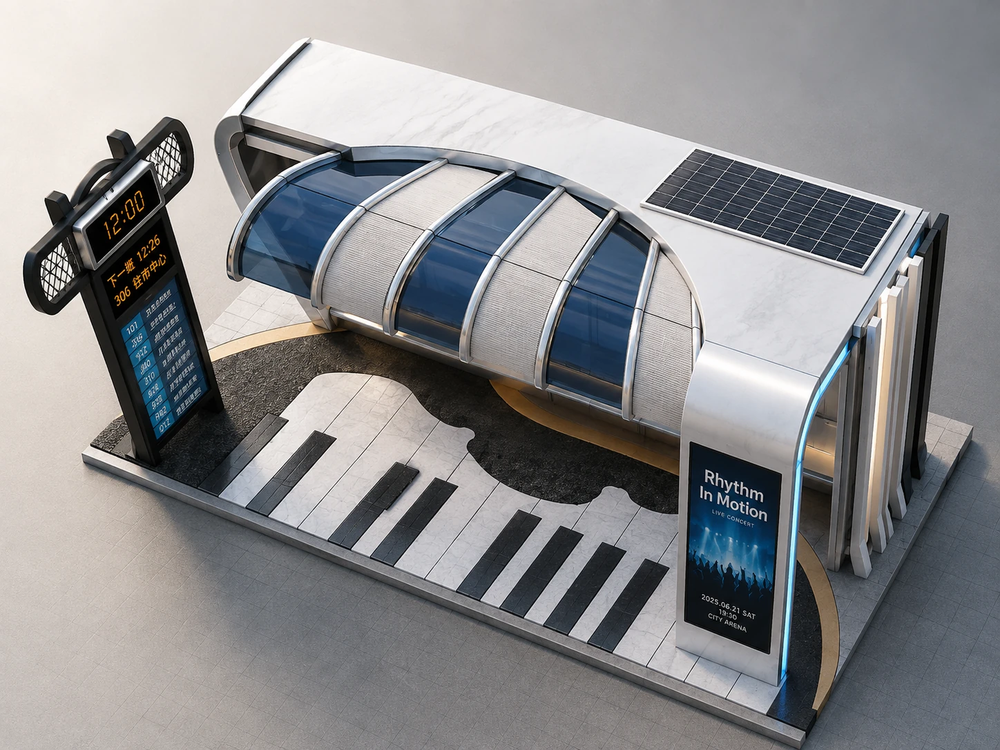
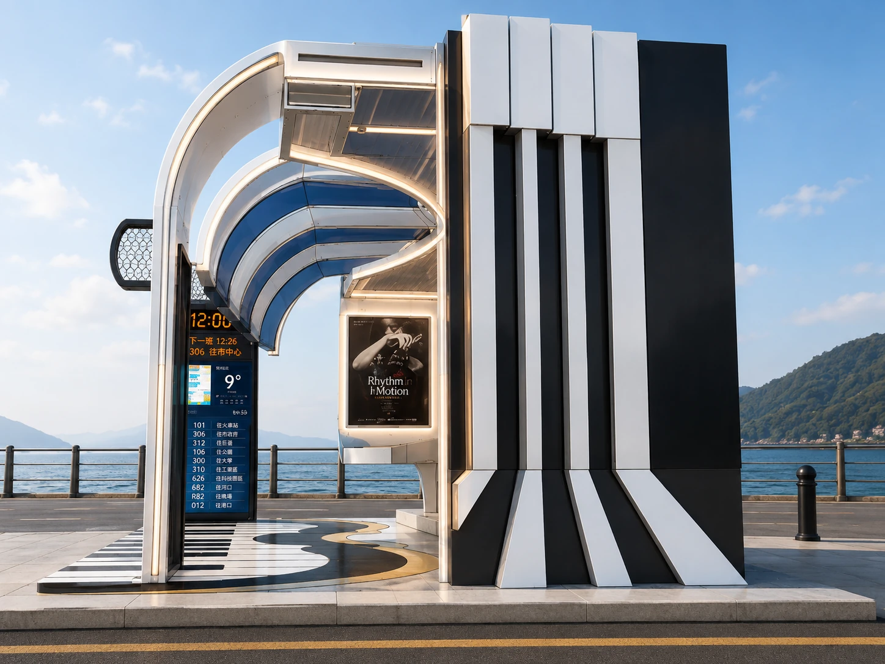
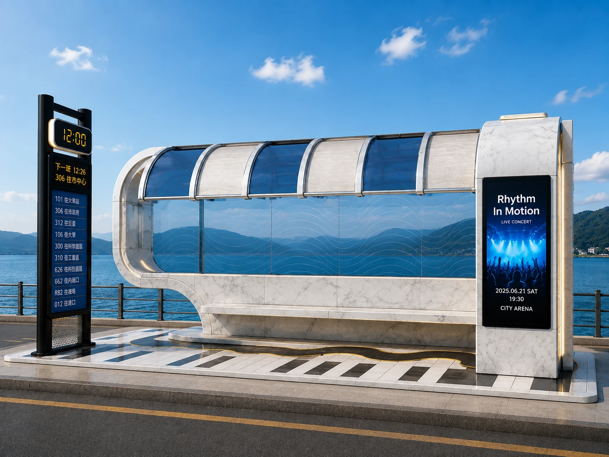
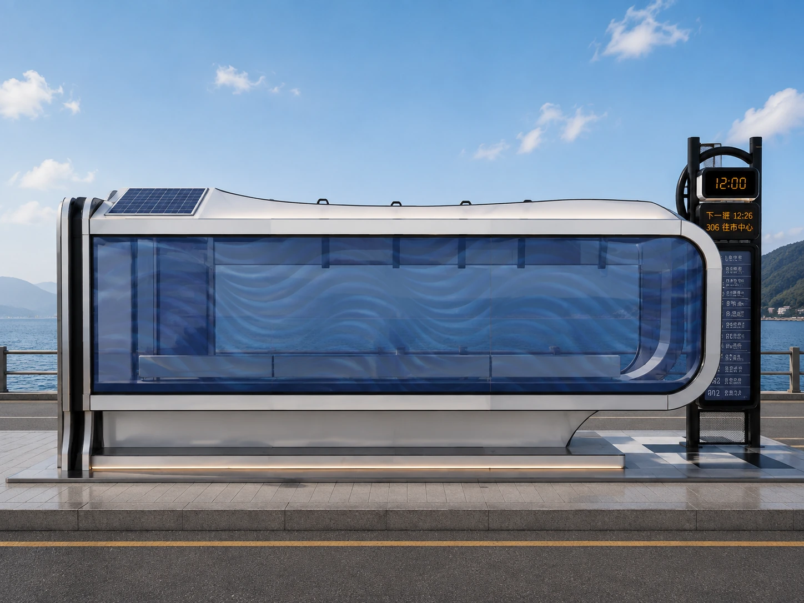
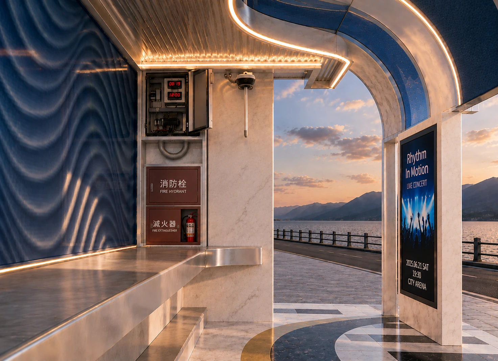
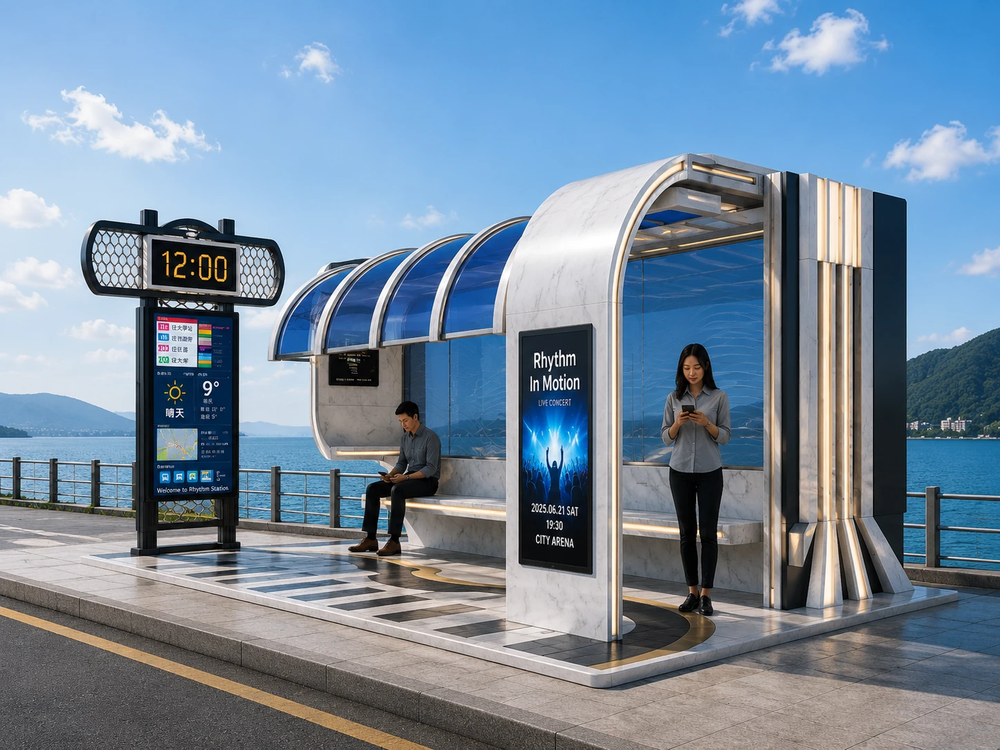
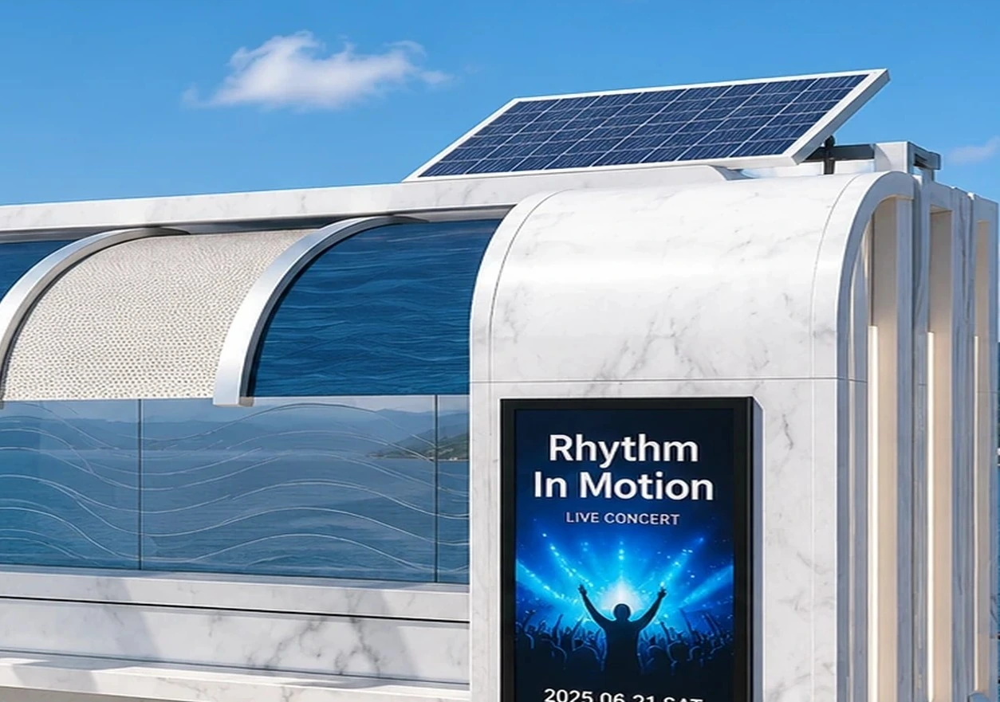

候車亭概念設計Piano Bus Shelter
以「城市移動中的音樂節奏」作為設計起點，將候車、資訊傳達、媒體展示與節能設備整合於同一座公共設施之中。透過鮮明的琴鍵語彙與流線棚架，讓候車亭不只提供遮蔽與等候功能，也成為具有辨識度的城市節點。
專案概述
本案以「鋼琴 × 城市移動 × 智慧候車」為核心概念，思考日常交通設施除了滿足基本候車需求之外，是否也能成為具有記憶點與城市特色的公共空間。設計將黑白琴鍵、音樂節奏與連續流線轉譯為棚架、地坪及立面的造型語彙，建立從遠距辨識到近距使用都具有一致性的視覺形象。機能上整合即時乘車資訊、電子時刻表、大型廣告影像區、夜間 LED 照明與太陽能光電板，使資訊、媒體、照明與節能系統不再只是附加設備，而成為整體設計的一部分。
RHYTHM IN MOTION
城市律動
設計特色
設計從「辨識性、候車機能、資訊整合、夜間使用與節能」五個面向同步發展，讓造型與設備彼此呼應，而不是各自獨立配置。候車區地坪並與既有人行空間順平銜接，減少不必要的高差，使整體空間在視覺與使用動線上更連續。
鋼琴意象
以黑白琴鍵作為主要設計語彙，從地坪延伸至立面與端部構成，利用黑白對比與重複節奏建立鮮明識別。即使在遠距離觀看，也能快速辨認候車亭的主題意象，並使公共設施具備更強的場所記憶點。
流線棚架
以連續弧形構件形成具有包覆感的棚架輪廓，在提供遮蔽的同時，以重複排列創造如音樂節拍般的視覺韻律。流線造型也呼應車輛行進與城市移動的速度感，使整體量體呈現輕盈而連續的方向性。
智慧候車
將候車最常需要確認的資訊集中於智慧站牌介面，包括現在時間、下一班車、車次、行駛方向與乘車時刻等，降低乘客在不同資訊載體間搜尋的負擔。資訊設備的位置亦納入整體空間配置，使乘客在等候區即可快速閱讀。
廣告影像區
於主要視覺面配置大型廣告影像區，可彈性呈現商業廣告、地方活動、公共宣導與城市資訊。媒體牆同時被視為候車亭立面構成的一部分，使數位內容與建築造型整合，而非後期附掛於結構表面。
太陽能節能
於棚架上方配置太陽能光電板，概念上可支援 LED 照明、資訊顯示與部分低耗能設備的能源需求。透過將光電設備納入屋頂構成，讓節能機能與候車亭外觀同步思考，呈現智慧公共設施的設計方向。
夜間照明設計
結合候車亭頂棚與結構配置導入線性照明，強化夜間候車區的辨識度與使用安全。燈光以簡潔、低干擾的方式融入整體造型，使琴鍵意象在夜間仍保有清楚的視覺層次，同時營造舒適且具有識別性的候車環境。
設計資訊
本作品為個人概念設計，著重於公共候車設施的造型、使用情境、設備整合與視覺識別。尺寸、材料及能源系統皆以設計意向與空間尺度推演為主，用於呈現設計思考與整合能力，並非施工規範或實際完工工程。
設計總覽
以下視圖以原始 2022 SketchUp 設計為基礎重新整理，從鳥瞰、正立面、側向、後側與內部視角呈現候車亭的空間構成。透過不同角度可進一步閱讀琴鍵立面、流線棚架、智慧站牌、廣告影像區、座椅與設備之間的配置關係，以及整體造型在不同觀看距離下的視覺層次。





環境情境模擬
為進一步檢視候車亭置入實際公共空間後的尺度感、周邊關係與視覺辨識度，將原始設計置入日間道路與候車情境中進行視覺化展示。情境圖著重觀察棚架比例、廣告影像區、太陽能設備與人行空間之間的關係，並呈現設計在城市環境中的整體氛圍。


Portfolio visualization refined from the original 2022 SketchUp design. 部分情境圖為視覺化呈現，非實際完工照片。